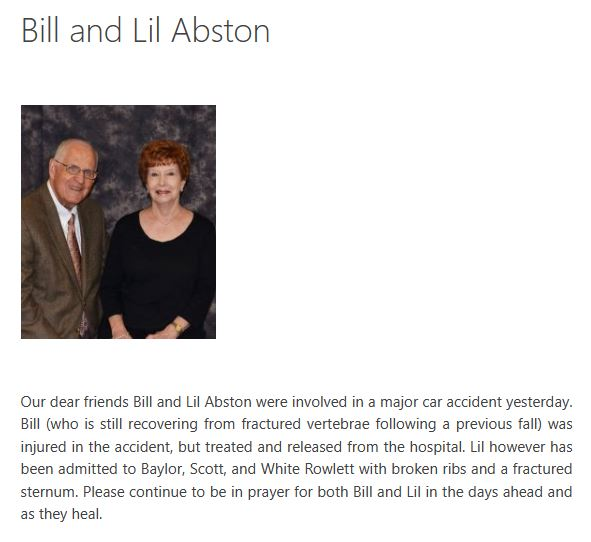
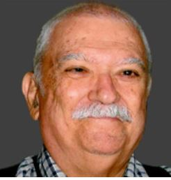
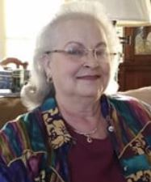
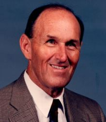
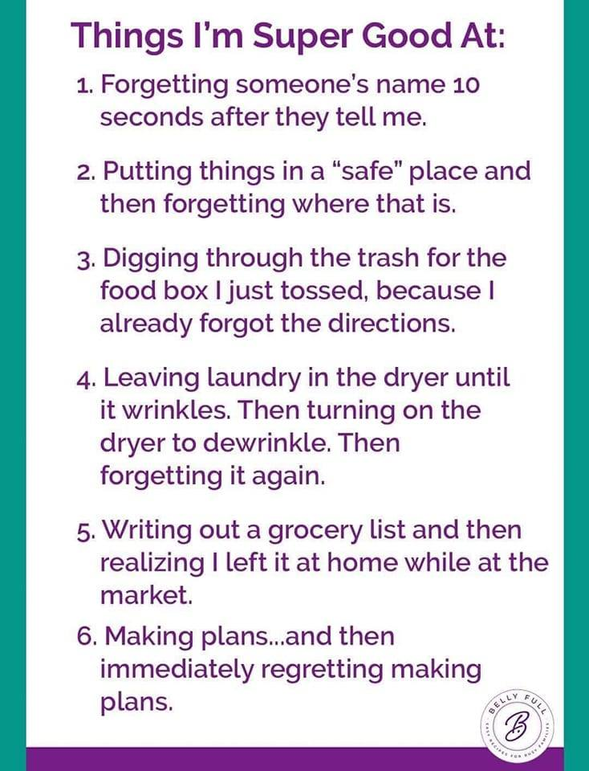

E-SYSTEMS/RAYTHEON RETIREES LUNCH GROUP
By Eileen Wahlstrom
March 29, 2023/ April 26, 2023
Present: 28, 20
First Time: Bob Compton, Darrell Fletcher/
Long Time: Joe Cox, Jim Dunn, Sharon Dunn/ Eddie Moore
Guests: None
SICKNESS:
Bill and Lill Abston :

Update about Lil and Bill Abston from their daughter - Grace
Mom wanted me to give an update. If you don’t know already, they had a car accident late Sunday afternoon, March 12th, while on their way to their small group Bible study.
They were t-boned on mom’s side of the car and it was totaled. Dave saw their car at the car pound and couldn’t believe the condition. They were hit three times by the same car and the car spun in circles. She was moved from the hospital yesterday to Encompass Rehabilitation Hospital in Plano on 15th St. She has a cracked sternum and she broke three ribs on the right side. Her right foot and right shoulder are hurt but thankfully neither one is broken. Her back is very sore too. She is experiencing some difficulty talking as it hurts so much. She will be at rehab for at least two weeks. Mom has her phone but it might take her awhile to answer texts and/or calls.
Dad had scans Sunday night at hospital and praise God there was no re-injury to his neck. (For those who don’t know he fell while walking his daily 3-5 miles two days before Christmas and broke neck in two places. He got the neck brace off a week before this car accident. ) My brother, Dave, took him to doctor today because his leg started hurting a couple of days ago. Doctor did X-rays of his back today thinking it might be coming from back. (He started wearing a back brace several days ago.) It may be a few days for those results and depending on what they find, he may have further X-rays on leg.
The seat belts and airbags did their job and we thank God their injuries weren’t worse. We thank everyone praying for them and solicit continued prayers for their recovery. It’s very hard for them to be separated from each other after 66 years (next month) of marriage.
Hug your loved ones and tell them you love them!
Grace
Mike Farris :
From Rae Ann Farris:
Hey Guys Mike Farris would like to thank you all for the birthday wishes. For those of you who don't know Mike was diagnosed with Stage 4 Throat and Neck Cancer Tuesday March 28. We have been in TMC Denison since that day. On Wednesday he received a trach and was taken to ICU. Thursday a PEG (feeding) Tube and Friday I witnessed the man I love endure something I will never forget. The Dr was doing a bed side trach change which is normally a simple procedure well things went down hill real fast. All of the sudden His ICU room was filled with medical staff and I was being masked and gowned. The new trach could not be inserted because it was catching on the hardware from his neck fusion. As I stood there watching and listening I began to pray. I heard one of the Dr's say get ready we have about 3 seconds then we're going in the lung. God was certainly in that room. The Dr was able to place the trach in enough to rush Mike to the OR. He came back to his ICU room with a temporary trach and his Dual Port for his treatments. Mike will be headed back to the OR Wednesday to receive what we hope to be his last trach procedure. We have an excellent team of Dr's with a game plan already in place and a even greater support team in our Families. The next few months will be very hard, please keep Mike and our team of Dr's in your thoughts and prayers.
Deaths
Jesse Gilbert
June 24, 1933 - March 7, 2023

With sad hearts, Beth, Roland, I, and our families want to let you all know that Dad, Jesse Gilbert, passed away peacefully yesterday (Tuesday) afternoon at home.
We appreciate all the cards, prayers, kind words, and love we have received from friends and family. We love you all.
Jesse was a Systems Engineer for a good many years in Garland.
Obituary: Click here
Debbie Gober
July 21, 1951-February 27, 2023
On February 27th, Debbie Gober, loving wife, mother, sister, and devoted friend, passed away peacefully in Dallas Texas.
After graduation from Stephen F., Debbie returned to Dallas, where she met the love of her life, Mark Gober at Lovers Lane UMC. Their marriage in Australia in October,1982 was the beginning of a fun-filled life that included family, world travel, and many cherished friends.
In 1989 Debbie and Mark moved back to Dallas, where in 1994, their family grew with the arrival of their cherished son, Cade.
Debbie is survived by her loving husband Mark and son Cade; her sisters Cindy Phaup and Martha Butcher; her nieces Lindsey Phaup and Leslie Horn.
In lieu of flowers, please consider a charitable donation to: Feed My Starving Children or Rays of Light. Please notify the charity that your gift is "In Memory of Deborah Sue Gober."
Obituary: Click here
Bob White
August 24, 1941 - March 21, 2023

Born on August 24th, 1941, to Robert Edward White and Marie (Devlin) White in Enid, Oklahoma. He was a high school graduate in 1959. Following graduation, he went on to serve for 5 years in the U.S. Navy. He landed a job in the engineering department at E-Systems where he continued to advance and retire with Raytheon making wonderful friends along the way. One of which he married on August 4th, 1983, Mary “Betty” White. Bob was a wonderful, kind, and patient Brother, Uncle, Dad, and Grandpa. He enjoyed spending time with family and friends, and especially his Grandchildren. His most favorite thing to do was Bowl. He and his wife bowled in a bowling league with their work colleagues for many years. His main joy was spending time with friends and family. His most special trait was his never-ending ability to light up any room he walked into with his funny jokes, great stories and contagious smile. He is survived by his wife, Mary and their eleven grandkids. His daughter Kristal and son Bobby, along with his family and friends who loved him dearly
Obituary: Click here
Mark Clark
May 21, 1964 - March 15, 2023
Mark Andrew Clark, 58, of Wichita Falls, passed away on Wednesday, March 15, 2023.
Mark was born on May 21, 1964 to Mildred (Choate) and Johnny Sullivan Clark. He was married to Julia (Brown) on May 28, 1983.
Mark served in the United States Marine Corps in the late 1980s. He graduated with a Bachelor of Computer Science in May of 1997, from Midwestern State University. Since then, Mark has been working with several contractors for the U.S. Department of Defense.
Mark loved fishing, music, and especially family. Mark was known for his kind, gentle spirit, and his deep love and consideration of others before himself. He loved others because of his love for the Lord, above all.
Mark was reunited with parents, Mildred Alsup and husband, Phillip Alsup Sr., father, Johnny Clark; his mother-in-law, Janet Brown; sister, Sharon Renee Clark; and grandparents, MT and Ruby Choate.
He is survived by his wife, Julia Clark; mother, Helen Clark; sister, Tammye Montgomery and husband Randy; sister, Rhonda Moser and husband Jeff; brother, Phillip Alsup, Jr.; brother, Michael Choate and wife Laterha; sister, Vickie Foster and husband Lonnie; sister, Tracy Miller and husband Thumper; brother, Rick Patterson and many adoring nieces, nephews, great nieces, and great nephews.
Obituary: Click here
Sandra Swingle (Wife of Larry Swingle and daughter of David and Ruth Tacke)
October 5, 1949 - April 5, 2023

Mrs. Sandra T. Swingle, age 73, passed away on Wednesday, April 5, 2023, in Prosper, Texas. Sandra was born on October 5, 1949 to her parents who preceded her in death, Mr. David Richard Tacke and her mother Mrs. Ruth Parker Tacke
She was a devoted wife of 51 years to her husband, Larry Swingle, and together they raised 2 daughters, Kim Ann House (Greg House) and Sharon Kelley (Tim Kelley). She was also a proud Moppie to her 4 grandchildren, Jason and Jessica House, Kingston Kelley and Braddox Runge, who brought her immense joy and happiness. She is also survived by her brother, David Christian and two nephews, Erik and Wesley Hare.
Sandra was a lover of horses, books, dachshunds, chai lattes and chocolate. She gave back to her community in her younger years with weekly blood donations and was a wonderful cook who always took care of friends and neighbors with a good meal when needed. Sandra leaves her loved ones with fond memories and a legacy that will carry on in her children and grandchildren.
Obituary: Click here
Charles Troy Brodnax
March 28, 1933 - April 12, 2023

Charles "Chuck" Brodnax went home to his Savior on April 12, 2023. Chuck was born in Natchitoches, LA on March 28, 1933 to Thomas and Katherine Brodnax
He joined the USAF after finishing high school and served in Japan, Korea and Okinawa before being discharged in 1955. Chuck attended the University of Houston graduating Summa Cum Laude with degrees in both Math and Electrical Engineering in 1960. Later, he earned a Masters in Electrical Engineering from NYU while working at Bell Telephone Labs and a PhD in Statistics from SMU while at Texas Instruments. His career continued with USAF in Ohio, Hughes Aircraft in California and finally, at E-Systems in Dallas. After retirement, he continued to teach part-time at Dallas Baptist University, SMU and UTD.
In 1956, Chuck married Peggy and they had a son, Tim Brodnax. During Tim's early years in Dallas, youth soccer was growing in popularity and Chuck was a leader in the formation and coaching of youth soccer. Following the death of his first wife, Chuck and Betsy Doyle married in 1992 and they formed a successful real estate partnership. For 31 years, they enjoyed a very happy and fulfilling life together
Chuck had an unwavering faith in God and he shared this with all those he encountered. He had a gift for supporting and mentoring others in so many different activities. His passions included BSF, CBS,
The Dallas Banjo Band, golf, The Masons and Scottish Rite Hospital. He was a 33° degree Mason and Past Master of The Claude L. Austin Lodge where he was involved in numerous Masonic activities
Chuck is survived by his loving wife Betsy; Son Tim (Jana) Brodnax; Stepsons Mark and Danny Doyle; Grandchildren Jeff (Kara Mae) Brodnax, Matt (Cathy) Brodnax, Dan Brodnax, Jon Brodnax and Kate (Jake) Kennedy and Great Grandchild Shep Kennedy. He also leaves behind Sister Karon (Bill) Appell; Brothers Tom (Linda) Brodnax and Bill Brodnax.
Obituary: Click here
Barry Eugene Conroe
December 14, 1957 — April 19, 2023
arry Eugene Conroe, age 65 of Sachse, Texas, passed away Wednesday, April 19th, 2023, at Medical City Hospital of Plano.
He received his dual degrees from the University of Kentucky in Computer Science and Mathematics, and his MBA from the University of Dallas. He began his career with Texas Instruments. Throughout a distinguished career, he provided leadership in Information Technology, System Engineering, and Software Engineering for Fortune Two Hundred companies before retiring after 33 years with Raytheon as an IT Director.
He held membership in the International Council on Systems Engineering and the Society for Information Management, among other professional organizations. He was COBIT certified in IT Management and Governance, ITIL certified in IT Service Management, and received numerous honors and awards including the 2005 Excellence in IT Award from Raytheon, Incorporated.
Barry was an avid University of Kentucky basketball fan as well as a Dallas Cowboys fan. He would never miss a single game
Upon retiring, he filled his time with mentorship, spending time with his family, playing golf, or doing landscaping in his yard
He was a member of North Place Church and never wanted to miss one of Pastor Bryan’s sermons. Through the fellowship at North Place Church, he developed many meaningful relationships.
Barry is survived by his wife, Sherri Conroe; daughter, Emily Conroe of Houston Texas, and son, Ryan Conroe of Denton Texas; bonus daughters: Cameron Cruz of Ashville, North Carolina, Amanda Redus (Blake) of Garland Texas, and Lauren Cruz of Sachse Texas; three grandchildren, Jagger Cruz-Bello, Memphis Redus, and Rue Redus, sister Darlene Russell (Marvin), nephew Christopher Russell; and one furry grandchild, Emily’s dog, Leon Conroe.
Barry was preceded in death by his parents, Jackie and Nellie Conroe of Radcliff, Kentucky.
Obituary: Click here
Announcements
Medical Claims for reimbursement can be mailed to:
Alight Smart Choice Solutions
PO Box 64009
The Woodlands, TX
77387
Paper Pension Statements No More
NOTE:
Paper pension statements will not be mailed out any longer. You must now view your pension statement on rtxpensioncenter.com. If your direct deposit looks off, better check. Some people have reported being double charged for their medical deductions (Dental, etc.).
Benefits Administrator Change
This info was posted on our Facebook group.
Alight has a benefits "Gateway" website that will be used for benefits administration. If you haven’t created an account yet you can use this link to do so, (https://rtxhealthyyou.com/enrollment-2"). The instructions indicate to go to www.yourtotalrewards.com/rtx and select "New user?". The "New user?" selection links to a couple of identifying questions and then steps you through the account setup. It recognized me and I was able to set up my account so I could create my profile and preferences. There’s also an online chat feature to talk with a benefits representative and find out additional details about benefits changes. They had my old employee email address in my profile and I had to call Alight to get that corrected (800-243-8135). Be sure to check your beneficiary information. This was blank for me so I corrected that.
Alight will manage the medical reimbursement and (if it works like intended) we will be able to check our DDB balance, submit claims, authorize direct deposit, etc. online.
RTX is also moving the 401K administration from Fidelity to Alight. The 401K change to Alight will not impact you if you've rolled over your 401K to personal IRA. www.yourtotalrewards.com
IF YOU NEED HELP SETTING UP YOUR ALIGHT ACCOUNT, REIMBURSEMENT CLAIMS, DIRECT DEPOSIT, ETC. PLEASE EMAIL ME AT emmawahlstrom@aol.com. TERRY GAUS HAS OFFERED TO HELP THE RETIREES WHO MAY HAVE QUESTIONS. I CAN ALSO HELP NAVIGATE THE SWAMP IF YOU NEED ASSISTANCE.
Eileen continues to collect eye glasses and hearing aids for donation to the Lion’s Club. Thank you all who have donated.
Note – several members brought old sets of eyeglasses to the September meeting. Terry gathered them and later coordinated a hand-off to Eileen in early October
Our next luncheon will be May 31st. Tell your fellow retirees! Bring a Guest!!!
Eileen Wahlstrom

Note: We are an independent group of Garland E-Systems/Raytheon retirees and not affiliated with the Raytheon Corporation in any way.

 Submit your Garland ESY/Raytheon stories now!!
Submit your Garland ESY/Raytheon stories now!! 
ESY Ray